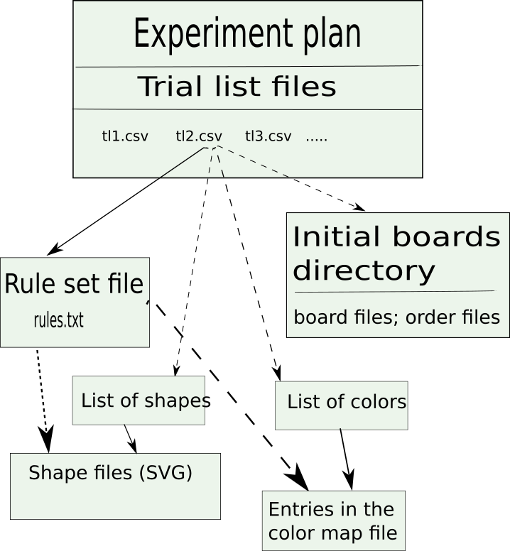

Rule Game Server Update
March 29 - April 5, 2021
Documentation:
- http://sapir.psych.wisc.edu:7150/w2020/ -- Production (v 1.*)
- http://sapir.psych.wisc.edu:7150/w2020-dev/ -- Development (v 2.*)
Overall Game Server Architecture
What's new in Game Server 2.*
- Custom colors
- Custom shapes
- Subdirectories
- "Pick" operation
- New balancer
- Rule syntax enhancements
- Experiment plan validator
- Version check
- Backward compatibility
- Captive Game Server can emulate Web Game Server more closely
Custom colors and shapes
Experiment control files:

You can use subdirectories
- For each kind of files, a directory under /opt/tomcat/game-data:
- trial-lists
- rules
- boards
- shapes
- For each experiment, you can use an experiment-specific subdirectory for...
- rule set files
- initial board files
- shape files
- A single color map file for all colors, though
- More manageable data for multiple experiments
"Pick" operation
- New trial list parameters to control user experience:
- feedback_switches=fixed: the player sees which game pieces are movable
- feedback_switches=free: the player does not know which pieces are movable until he tries
- free_wrong_cost=0.3: the cost of a move attempt ("pick") on an immovable piece
- I believe the new version of GUI client supports this (need to check)
New balancer
- Automatic "balancing" when assigning new players to trial lists
- Old: goal = equalize the number of players initially assigned to each trial list
- New: goal = equalize the number of players "active" in each trial list
- "Active player" = either
- Received a completion code
- Very recently registered, and, hopefully, still playing
- Experiment manager can create a "defect file" to e.g. account for players who received a completion code, but should be ignored
An atom of a rule line:
(count, shapes, colors, positions, buckets)
All-new destination bucket arithmetic:
- Set arithmetic: every expression is interpreted as a set
- Variables such as p,pc,ps evaluate to an empty set [] or a set of 1 element
- Set union: [S1, S2]
- Arithmetic on sets produces a cross product:
- [] + [x,y] = []
- [a] + [x,y] = [a+x,a+y]
- [a,b] + [x,y] = [a+x,a+y,b+x,b+y]
- Equality operation: [x1,x2,...]==[y1,y2,...] gives:
- empty set [] (if the two sets have no elements in common);
- [1] (if the two sets have at least one common element).
- Negation:
- ![] gives [1];
![any non-empty set] gives [].
Modulo-4 postprocessing
Can do fairly complex logic, e.g.
- [!p*[0,1,2,3], !!p*(p+1)] : start with any bucket, then continue clockwise
Backward compatibility
An older version of the GUI client will still work with the new (2.*) Game Server
- An older experiment plan (from the 1.* era) will still work correctly with the 2.* Game Server
- Prod:
- Client: http://sapir.psych.wisc.edu/rule-game/prod/
- Server: http://sapir.psych.wisc.edu:7150/w2020
- Dev:
- Client: http://sapir.psych.wisc.edu/rule-game/dev/
- Server: http://sapir.psych.wisc.edu:7150/w2020-dev
E.g.
-
http://sapir.psych.wisc.edu/rule-game/prod/?exp=experiment_plan&workerId=new_unique_worker_id
-
http://sapir.psych.wisc.edu/rule-game/dev/?exp=experiment_plan&workerId=new_unique_worker_id
Let's promote dev to prod
- Let's do a bit of testing on dev...
- and then promote it to prod!
New in the Captive Game Server
- Better compatibility with the human subject experience
- Can feed a trial list file to the Captive Game Server, and tell it to play as per
the parameter set in a specific line.
Not trying to emulate the flow control of human-subjects experiments:
- transition between normal series and bonus series;
- ending normal or bonus series
- rewards